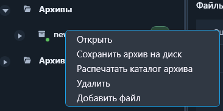
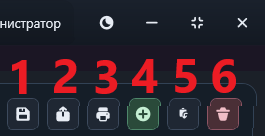
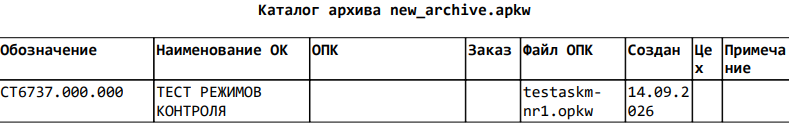

Операции с архивами
Выберите архив в дереве слева. Доступные действия появятся в панели над таблицей файлов. Основные действия также находятся в контекстном меню архива.

Доступные действия
- Открыть — загружает список файлов выбранного архива.
- Сохранить архив на диск — экспортирует выбранный архив как файл *.apkw.
- Конвертировать APKW в APK — создаёт комплект APK и OPK для старой версии программы.
- Распечатать каталог архива — формирует печатный список программ контроля.
- Добавить файл — добавляет программу контроля в выбранный архив.
- Вставить файл — вставляет ранее скопированный или вырезанный файл.
- Удалить архив — удаляет выбранный архив после подтверждения.
Для архивов проверки дополнительно доступна повторная проверка всех файлов. Состав кнопок зависит от выбранного архива и прав текущего пользователя.

